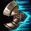

Ahri "Die neunschwänzige Füchsin"

Informationen über Ahri
Ahri ist ein Magier Champion der auf der Midlane gespielt wird. Sie ist zwar nicht schwer zu spielen, aber wenn man jedoch ihr volles Potential ausnutzen möchte, braucht es auch noch seine Zeit und Übung. Das Treffen ihrer Skillshots und die Positionierung in den Teamfights muss man mit ihr besser beherschen, als mit manchen anderen Champion wie z.B Zed. Sie wird nicht durch direkt durch Stärke ausgezeichnet, sonder viel mehr durch ihre Spielart an sich. Sie ist kein Champion der gegen jeden Gegner dominiert, sonder einer der gegen alles standhalten kann.
Wenn man gegen Ahri spielt ist es wichtig das man ihrer E-Fähigkeit "Bezaubern" (Ein Herz das nach vorne gestoßen wird und den Gegner zu ihr hin laufen lässt) ausweicht, weil wenn man davon getroffen wird kann man für einen Augenblick nichts machen und Ahri kann in der Zeit dann sehr viel Schaden verursachen und auch eine Tötung erziehlen. Es ist auch wichtig sie vom Farmen abzuhalten damit sie nicht so schnell zu ihren Schadensitems kommt.
Was macht Ahri so Stark?
Einer der wichtigsten Gründe, warum Ahri so Stark ist, ist ihre Mobilität. Mit ihrer Ultimativen Fähigkeit kann sie 3 mal hintereinander einen schnellen Sprung nach vorne machen, welcher auch durch Wände gehen kann und auch Schaden an gegner macht. Sie ist also in der Lage aus schweren Situationen schnell wieder raus zu kommen. Ein anderer Grund ist auch ihre Fähigkeiten Kombo. Wenn sie schon ein paar Schadensitems gekauft hat, kann sie einen anderen Mid- oder Botlaner mit nur einer Kombo töten. Auch gegen gegner mit mehr Leben ist sie gut, Weil ihre Q Fähigkeit "Kugel der Täuschung" (Eine Magiekugel die nach forne gestoßen wird und wieder zurück kommt) beim zurückkommen Reinen Schaden macht, der nicht durch Magieresistens abgeblockt werden kann.Wichtige Items auf Ahri
 Morellonomicon
Morellonomicon- Sorcerer's Shoe's
 Luden's Echo
Luden's Echo- Rabadons Deathcap
- Zhonyas Hourglass
 Void Staff
Void Staff